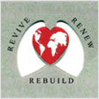
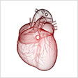
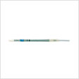
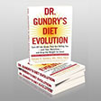

DR. GUNDRY – THE HISTORY
EDUCATION
Yale University cum laude graduate, with special honors in Human Biological and Social Evolution
Served as a clinical associate at the National Institutes of Health
Alpha Omega Alpha graduate of the Medical College of Georgia School of Medicine
Fellowship at the Hospital for Sick Children, Great Ormond Street, London
 Completed residencies in General Surgery and Thoracic Surgery at the University of Michigan
Completed residencies in General Surgery and Thoracic Surgery at the University of Michigan
AFFILIATIONS
 Former Professor and Chairman of Cardiothoracic Surgery, Loma Linda University Medical Center, Loma Linda, CA
Former Professor and Chairman of Cardiothoracic Surgery, Loma Linda University Medical Center, Loma Linda, CA
 Two successive terms as President of the Board of Directors, American Heart Association, Desert Division
Two successive terms as President of the Board of Directors, American Heart Association, Desert Division
Served on the Board of Directors, American Society of Artificial Internal Organs
 Current medical director, International Heart & Lung Institute, Palm Springs, CA
Current medical director, International Heart & Lung Institute, Palm Springs, CA
 Founding board member and treasurer, International Society of Minimally Invasive Cardiothoracic Surgery
Founding board member and treasurer, International Society of Minimally Invasive Cardiothoracic Surgery
Founder and current director, the Center for Restorative Medicine, Palm Springs and Santa Barbara, CA
EXPERIENCE
— Joined his colleague, Leonard Bailey, to perform more infant and pediatric heart transplants than anyone else in the world
— Has operated in more than thirty countries, including on charitable missions to China, India, and Zimbabwe in Africa
— Pioneered the science of interspecies heart and tissue transplants, and kept a baboon alive with a transplanted pig heart for 28 days, a record for this type of surgery
— As consultant to Computer Motion, was one of the first surgeons to receive FDA approval for robot-assisted minimally invasive surgery
— One of the first twenty surgeons to test the implantable left ventricular assist device, a form of artificial heart
— Consultant to self-improvement guru Tony Robbins, Oscar-winning actor Alan Arkin, and Dr. Mehmet Oz of TV's The Dr. Oz Show
INVENTIONS
— The pioneer of the Gundry Ministernomy, a now-widespread method for minimally invasive heart valve repair
— Holds patents on numerous surgical and medical assistance devices, including:
 The Gundry Retrograde Cardioplegia Cannula, the world's most widely used device for preventing cell damage during open heart surgery
The Gundry Retrograde Cardioplegia Cannula, the world's most widely used device for preventing cell damage during open heart surgery
The Gundry Lateral Tunnel, a "living" tissue that can rebuild parts of the heart in children with severe genetic heart defects
The Skoosh Venous Cannula, the world's most widely used data and fluid transfer tube used in minimally invasive heart surgery
HONORS
 Fellow of the American College of Surgeons; the American College of Cardiology; the American Academy of Pediatrics; and the College of Chest Physicians
Fellow of the American College of Surgeons; the American College of Cardiology; the American Academy of Pediatrics; and the College of Chest Physicians
 One of only 500 Fellows of the American Surgical Association
One of only 500 Fellows of the American Surgical Association
PUBLICATION
 Author of more than 300 chapters, articles, and abstracts in peer-reviewed journals on surgery, immunology, genetics, nutrition, and lipid investigations
Author of more than 300 chapters, articles, and abstracts in peer-reviewed journals on surgery, immunology, genetics, nutrition, and lipid investigations
Author of the best-selling Three Rivers Press book Dr. Gundry's Diet Evolution: Turn Off the Genes That Are Killing You and Your Waistline
DR. GUNDRY – THE PHILOSOPHY
If you're curious about Gundry MD Holobiotics supplements and health products, you're probably asking one question before all the others...
WHAT IS HOLOBIOTICS?
It's the concept that guides Dr. Gundry's "Diet Evolution" system, and all the supplements and products he's designed to support it. It's based on the belief that true health only happens when you're living in a state of cooperation with the trillions of tiny microbes that live everywhere in, on, and around your body.
Think of your body like an apartment complex. You're the landlord, and these trillions of tiny bugs are your tenants. Some of those bugs are "good" tenants, managing your digestion, helping energy move throughout your body, and powering as much as 80 percent of your immune system function, to keep you from getting sick or infected. But your body is also home to "bad" tenants...lectins (plant-based proteins that harm proper cell function), pathogens (bugs that cause illness and infection), and gut yeasts (which harm healthy digestion and help make you overweight).

HOLOBIOTICS: Your body and its "bugs" working together to give you optimum health

Sugar and other sweeteners endanger your "good" bugs and keep you from feeling your best
Naturally, you don't want these "bad" bugs running the show. But when you feed them unhealthy foods like sugars, artificial sweeteners, and preservatives, this makes them stronger, helps them kill off the "good" bugs...and turns your body into the kind of "building" where only bad bugs would want to live.
To restore your body to optimum health and wellness, you need to be sure you're taking care of the "good" bugs, making them stronger and better able to do their jobs promoting a strong and healthy you. Every product from Gundry MD Holobiotics is designed with this purpose in mind...whether it's a nutritional supplement for keeping the bugs in your gut powerfully effective...a skin treatment to nourish the healthy bacteria that live on the outside of your body...or any of the exciting new products currently in the works in the Gundry MD labs.
That's holobiotics. It's all about taking care of your good bacteria. Because if you take care of them... they'll take care of you.